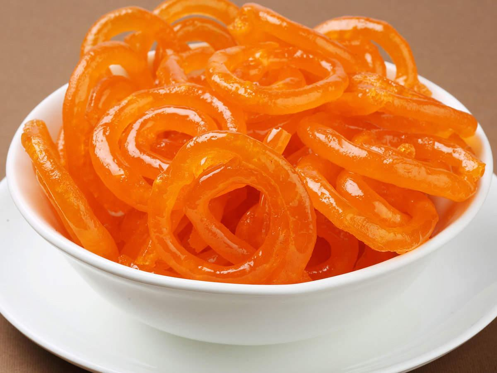
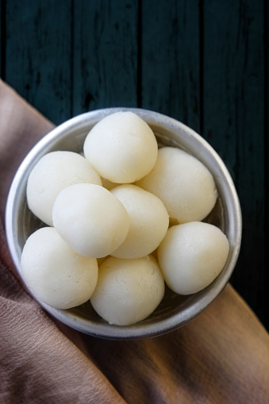

Popular Sweets

Gulab Jamun
Ingredients: Khoya, flour, sugar, water, cardamom, rose water, oil/ghee for frying.
Steps:
- Mix khoya and flour to form a smooth dough.
- Shape into small balls and deep fry until golden brown.
- Prepare sugar syrup with cardamom and rose water.
- Soak fried balls in syrup for 1–2 hours before serving.

Jalebi
Ingredients: All-purpose flour, yogurt, sugar, water, saffron, ghee/oil for frying.
Steps:
- Prepare batter with flour and yogurt, ferment for a few hours.
- Pipe batter into hot oil in spiral shapes and fry until crisp.
- Soak fried jalebis in sugar syrup.
- Serve warm.

Rasgulla
Ingredients: Chhena (paneer), semolina, sugar, water, cardamom.
Steps:
- Prepare chhena and knead smooth with semolina.
- Shape into small balls.
- Boil balls in sugar syrup until soft and spongy.
- Cool and serve chilled.

Kaju Katli
Ingredients: Cashew nuts, sugar, water, cardamom powder, ghee.
Steps:
- Grind cashews to a fine powder.
- Boil sugar with water to make syrup.
- Add cashew powder, cook until thick.
- Roll dough, cut into diamond shapes after cooling.

Besan Laddu
Ingredients: Gram flour (besan), ghee, sugar, cardamom.
Steps:
- Roast besan in ghee until golden and fragrant.
- Add powdered sugar and cardamom.
- Mix well and shape into small round laddus.
- Cool and store in airtight container.